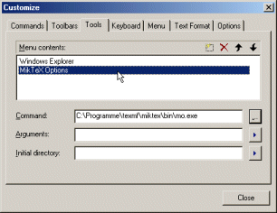

| Customizing the Menu 'Tools' |
You can add several commands to the menu 'Tools', that
allow you to invoke external tools. This is a very powerful feature.
Using placeholders for the 'Arguments', this feature allows
you to integrate external tools like spell checkers and other tools
which should work with the current document or currently selected
word or elements like that.
To customize the menu 'Tools', open the dialog
Customization and select the tab
'Tools'.

The meanings of the controls are:
- 'Menu contents'
-
A list of the menu items to display in the menu 'Tools'.
You can create a new entry by choosing the new button (rectangle), remove
the selected entry by choosing the delete button (cross) and move the
selected entry up or down in the menu by choosing the up or down button.
To change the entry name, simply select an item and press
'F2'.
- 'Command'
- Specify the full path of the application to start, when the selected
entry will be choosen.
- 'Arguments'
- Specify which arguments to pass on the command line to the
application. You can use place holders for
dynamic arguments.
- 'Initial directory'
- Specify the working directory for the application to start. You can
use place holders for dynamic directories.